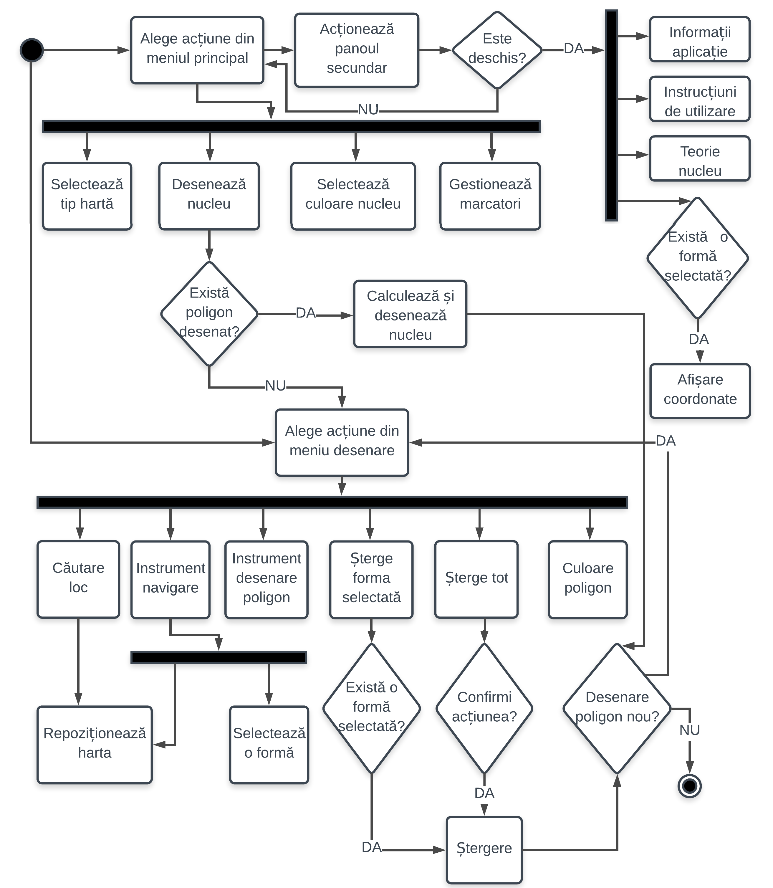
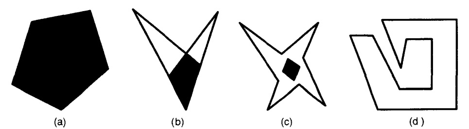

Desenează un poligon. Aici vor apărea coordonatele vârfurilor sale și vor fi actualizate în timp real.
Această aplicație a fost realizată ca parte aplicativă a lucrării de licență cu titlul "Calcularea nucleului unui poligon simplu. Algoritm, optimizări, implementare, aplicații", elaborată de către absolventul Farmatu Ștefan-Ioan, sub coordonarea domnului conf. dr. Sorin Stupariu, în cadrul programului de studii de licență la Facultatea de Matematică și Informatică, specializarea Informatică, forma de învățământ ID, de la Universitatea din București.
Având în vedere tema prezentei lucrări, obiectivul general este realizarea unei aplicații care să permită demonstrarea conceptului de „nucleu” al unui poligon dat. Pentru îndeplinirea obiectivului general, autorul și-a propus realizarea unei aplicații care să calculeze nucleul unui poligon determinat de vârfuri cu coordonate GPS de tip (latitudine, longitudine). Astfel, poligonul dat va delimita o zonă geografică, iar nucleul său (dacă există) va reprezenta o porțiune din acea zonă de unde va fi vizibilă întreaga suprafață a poligonului. De aceea, făcând abstracție de obstacolele din teren si de eventualele diferențe de altitudine, porțiunea determinată de nucleu este optimă pentru amplasarea unor elemente de supraveghere.
O astfel de aplicație își are utilitatea îndeosebi în domeniul militar, pentru determinarea amplasării optime a unor sisteme de supraveghere sau a unor sisteme defensive de tip C-RAM.
Structura interfeței este dată de trei elemente principale (antet, conținut și subsol), vizibile în permanență, și unul secundar (un panou poziționat în partea stângă a paginii, care poate fi afișat și ascuns prin acționarea unui buton).
În antet este poziționat meniul principal, care conține controalele esențiale pentru funcționarea aplicației. În partea stângă este vizibil titlul aplicației, urmat de butonul care acționează panoul secundar și de un meniu derulant, care îi permite utilizatorului să selecteze diferite moduri de vizualizare a hărții: rutier, teren, satelit și hibrid. În partea dreaptă sunt dispuse butoanele necesare utilizatorului pentru a interacționa cu harta și a desena pe aceasta.
Harta interactivă Google ocupă tot spațiul central al interfeței. Aspectul și funcționalitatea acesteia sunt personalizate cu Javascript și CSS. Utilizatorul poate interacționa cu această hartă, având posibilitatea de a o centra în orice zonă de pe glob, de a-i mări sau micșora scara. Pentru a centra harta, utilizatorul o poate face manual sau poate căuta locul dorit. Utilizând controalele din meniul principal, utilizatorul poate desena pe hartă un poligon, pe care îl poate apoi redimensiona, reconfigura și repoziționa. După calcularea și afișarea nucleului poligonului selectat, utilizatorul poate vedea vârfurile nucleului și coordonatele acestora.
Panoul secundar este inițial ascuns, oferindu-i utilizatorului posibilitatea de a alege dacă dorește să vadă informațiile pe care acesta le conține. Odată acționat butonul aferent, panoul secundar va fi afișat în partea stângă a ecranului, pe un fundal semi-transparent. Afișarea, respectiv ascunderea acestui panou, sunt realizate printr-o animație discretă, care contribuie la aspectul modern al interfeței. Elementele afișate pe acest panou sunt:
În subsolul paginii sunt afișate informații cu privire la autorul și destinația aplicației.
Următoarea diagramă UML de activități sintetizează logica pașilor parcurși de către utilizator pentru a desena un poligon și a-i calcula nucleul utilizând aplicația GMKernel: 
Definiția 1: Un poligon este simplu (sau poligon Jordan) dacă nu există o pereche de laturi neconsecutive care să se intersecteze.
Definiția 2: Un poligon simplu este convex dacă interiorul său este o mulțime convexă (orice punct de pe segmentul care unește oricare pereche de vârfuri ale poligonului se află în interiorul poligonului). Un poligon care nu are această proprietate se numește concav.
Definiția 3: Un poligon simplu P se numește poligon stelat în cazul în care există un punct q care nu este exterior lui P, astfel încât pentru toate punctele p din P, segmentul |qp| se află în întregime în P
Poligon stelat
Definiția 4: Nucleul K(P) al unui poligon simplu P este locul geometric al punctelor interioare lui P care îndeplinesc proprietatea specificată în cadrul definiției 3.
Poligoane cu nuclee (în negru): (a) poligon convex; (b) (c) poligoane stelate neconvexe; (d) poligon care nu este stelat
Definiția 5: Două puncte p1 și p2 sunt vizibile (reciproc) daca p1p2 nu intersectează niciun segment.